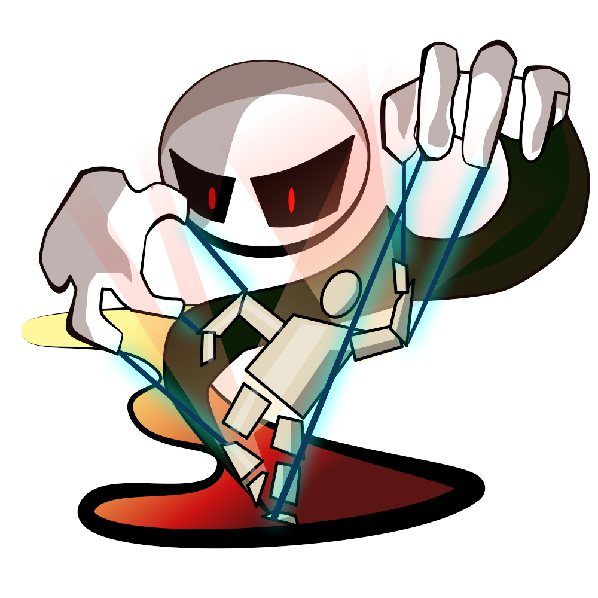

SAM Stickman Animation Maker
Free stick figure animation for Windows. Draw and rig a figure, pose it frame by frame, then export a video.
Download for Windows
What you can do
Draw
Ten kinds of stick: lines, circles, tapers, polygons, images, text and freehand paint. Fill them with gradients, patterns or textures.
Rig
Every figure is a tree of sticks, so moving one carries its children along. Inverse kinematics included.
Animate
Pose frame by frame with onion skins, and let SAM generate the inbetween frames for you.
Brushes and patterns
Use Photoshop .abr brushes and .pat patterns, import Krita brushes, or make your own.
Bring your figures
Import and export Pivot Animator .stk and Stick Nodes .nodes figures. Keep favourites in libraries.
Export
MP4, AVI or a PNG sequence out of the box. Add your own FFmpeg for animated GIF and WMV.
How to install
- Click Download for Windows and open the installer. You don't need administrator rights.
- If Windows shows "Windows protected your PC", click More info → Run anyway. Windows shows this for any app without a paid code-signing certificate.
- Follow the installer, then start SAM from the Start menu. It tells you when a new version is out.